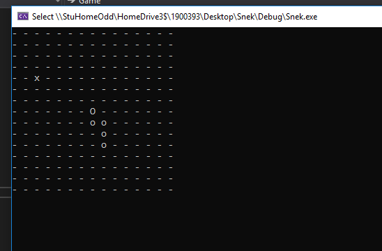

The Big Up, a 2D defense game created by a small group of postgrad students. As the only programmer I wrote the entire codebase. Also, due to the small size of the team I also contributed significantly to the game's design and created several of the player's animations.
Untitled SFML Games: My ongoing C++ SFML engine development, which can be found on my GitHub. The latest implementation features jumping physics, collisions, fully animated characters and character swappping for the player. In particular I'd like to highlight the implementation of the Command pattern, which encapsulates user input and allows for easy character swapping.
Snek, a console-based Snake remake in plain ol' C++ to practice some optimisation techniques with std::vectors, particularly pre-allocating the required memory for adding as many elements as necessary and using emplace_back() rather than push_back() to avoid having to construct a temporary object every time an element is added.

Some other assorted projects not mentioned here, including my Screeps AI and some (fairly old) Unity games, can be found on my GitHub -- so feel free to have a peek.